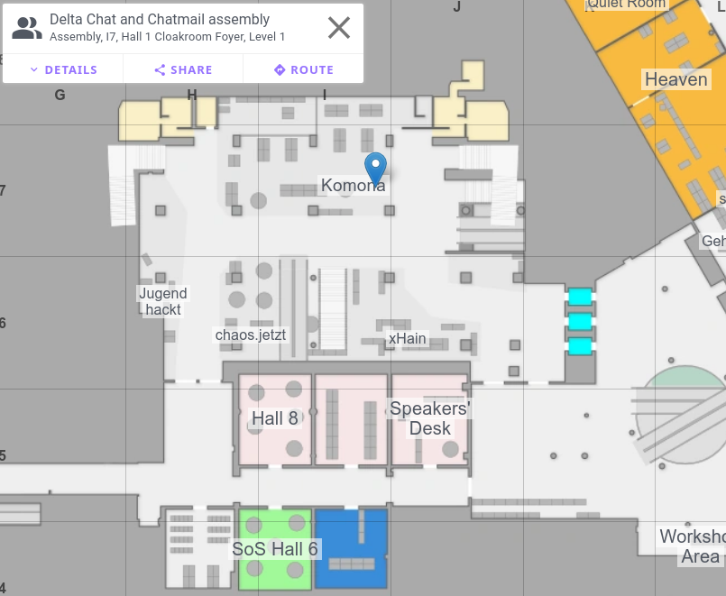

Delta Chat @ 39c3

Delta Chat is a secure and decentralized super app offering ...
💬 Reliable instant messaging with multi-profile and multi-device support
🥳 Interactive chat-shared
webxdc apps including
realtime Peer-to-Peer apps.
🔒 Guaranteed End-to-End Encryption using
SecureJoin and
Autocrypt protocols, with
many security audits.
Find us

Fediverse:
https://chaos.social/@delta
Friend assemblies:
📞 DELT (or 3358)
Events
Here is the list of events that are related and we are likely to participate in.
Maybe we will do sessions, follow us on the mastodon to be notified
when we decided:
https://chaos.social/@delta
🗓️ Day 1
12:00-14:00
Learn modern OpenPGP with the new RFC 9580 and Sequoia’s sq CLI. In two hours you’ll generate a v6 certificate, create a revocation cert, and practice daily ops: encrypt/decrypt, sign/verify, and publish via WKD/keyservers. We’ll cover Web-of-Trust basics (link vs vouch, trusted introducers, approvals) and note a GnuPG/v4 compatibility path. Optional: quick smart-card demo. Bring: laptop with terminal, email address; Sequoia sq preferred.
17:15-18:15
Might contain zerodays. https://gpg.fail/ From secure communications to software updates: PGP implementations such as *GnuPG* ubiquitously relied on to provide cryptographic assurances. Many applications from secure communications to software updates fundamentally rely on these utilities. Since these have been developed for decades, one might expect mature codebases, a multitude of code audit reports, and extensive continuous testing. When looking into various PGP-related codebases for some personal use cases, we found these expectations not met, and discovered multiple vulnerabilities in cryptographic utilities, namely in *GnuPG*, *Sequoia PGP*, *age*, and *minisign*. The vulnerabilities have implementation bugs at their core, for example in parsing code, rather than bugs in the mathematics of the cryptography itself. A vulnerability in a parser could for example lead to a confusion about what data was actually signed, allowing attackers without the private key of the signer to swap the plain text. As we initially did not start with the intent of conducting security research, but rather were looking into understanding some internals of key management and signatures for personal use, we also discuss the process of uncovering these bugs. Furthermore, we touch on the role of the OpenPGP specification, and the disclosure process.
20:30-22:00
You don't need expensive hardware to run a chatmail server - a cheap VPS or raspberry pi can support hundreds of users. All storage is temporary, as Delta Chat stores messages only on end devices. This makes chatmail tremendously easy to get started with - bring your child and learn together.
To setup a chatmail server, you need:
- SSH root access to a server, with a public IP address, and a domain (we will bring some for the workshop)
- basic command line knowledge
So come as you are, and join this chat group to get started!
🗓️ Day 2
15:45-16:45
It's the end of 2025 and digital authoritarianism becomes only ever more sophisticated. We want to use this opportunity to pause and reflect: how is the situation for citizens in different contexts around the world? What are people's actual needs? Which projects exist in this space? What is today's consumer hardware and software capable of to help making connections despite all attempts to the contrary?
More
Feel free to get in touch with us at our
assembly
and let us help you if you have any issues with the installation, want
stickers or just want to talk with us.